Everything you need to raise your Core
A complete, spoiler-friendly guide to PixieBuddy — how care works, how your Core grows and evolves, how rarity and pity work, and how to win every mini-game. No prior knowledge needed.
What is PixieBuddy
PixieBuddy is a classic virtual desktop pet. A little crystal Core is born, lives on your desktop as a transparent always-on-top window, grows into its adult form, and stays by your side forever.
You interact entirely through a clickable radial menu — there is no chat and no AI. Everything runs offline on your machine. The whole experience is built around gentle, classic care: your pet reacts to attention, grows, plays, collects cards, and never punishes you for stepping away.
🪐 Lives on your desktop
A draggable, always-on-top overlay that wanders a little around where you place it.
💗 Care without punishment
No death, no aging, no grave. Neglect can make it sick, but care always heals.
💎 Unique by seed
Every Core has its own rarity, gem, cosmic origin and personality.
🔌 100% offline
No network, no login, no telemetry. Your pet is yours alone.
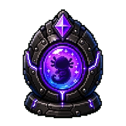
Getting startedYour very first Core makes the full journey from a raw technological core to a permanent adult. It only happens once — after that, new Cores are born as babies again, and the account-wide stage selector lets you jump straight to any stage you like.
The first launch
- A brand-new Core (EV0) is fabricated in about 30 seconds.
- When it hatches into a baby, the app asks you to give it a name. That unlocks the First Name achievement.
- From there it grows through four stages over a few days into its permanent adult form. See Evolution for the timing.
The core loop
Once you understand it, every day looks like this: keep the four care bars comfortable, let your pet sleep at night, play a mini-game or two, give some affection, and — once you reach adulthood — recycle Cores to discover new rarities and fill your collection.
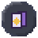
Menu & controlsEverything is done from the radial bubble menu (click your pet) and the system tray icon. Icons are pixel-art; the settings gear is always last.
Radial menu
System tray
A single tray icon serves all your buddies. Left-click it to hide/show everyone at once; right-click for a menu that lists every buddy you've created (inactive ones dimmed), lets you activate any of them individually, offers Reopen all, toggles the light, and quits. The tooltip shows name, stage and current mood.
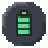
Care statsYour pet has four everyday bars — hunger, happiness, energy and cleanliness — plus health, which sits behind them. The four bars slowly drain over time; your actions top them back up.
| Stat | Starts at | Behaviour | How to restore |
|---|---|---|---|
| 🔋 Hunger | 85 | Drains steadily while awake; takes a single hunger hit each morning on waking. | Feed (🔋) |
| 😊 Happiness | 80 | Drains slowly while awake. | Pet (💕) & play (🎮) |
| ⚡ Energy | 80 | Empties over ~16h awake; refills over ~8h of sleep. | Sleep |
| 🧼 Cleanliness | 85 | Drains slowly while awake. | Bath (🛁) |
| ❤️ Health | 100 | Only changes while awake. Frozen during sleep. | See below |
How health works
Health is the safety net. It reacts to the state of the four bars:
- If any bar falls very low, health starts to slip. If two or more bars are low, it slips slowly. The more critical bars there are, the faster it drops.
- When all four bars are comfortable, health slowly recovers on its own.
- If health falls to about 35 or below, your pet becomes sick. It recovers from sickness once health climbs back up and the bars are healthy again.
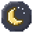
Sleep & day/nightSleep is dual: it happens automatically on a schedule, and you can also control it manually with the light at any time.
Automatic schedule
- Your pet falls asleep on its own at night, around 10 PM (22:00).
- It wakes up by itself in the morning, around 8 AM (08:00).
- While asleep it shows Zzz, doesn't open speech bubbles, and refills energy. No bars drain and health is frozen.
- On waking it takes a single morning hunger hit, so it's usually hungry first thing.
Manual light
Use the light toggle (💡 in the menu or the tray) to send your pet to sleep or wake it whenever you like — the manual choice overrides the schedule for that period.
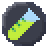
Illness & cureSickness is a recoverable state, never a punishment. If health drops too far (around 35 or below), your pet gets sick and shows a fever thermometer.
Two ways to heal
- Normal care: get the bars back up and keep them comfortable — health rises and the sickness clears on its own.
- Medicine (💉): the syringe button appears in the menu only while your pet is sick. One dose restores a big chunk of health and clears the sickness instantly.
The moment your pet is cured, the thermometer and sick state vanish immediately — you don't wait for the next tick. After a dose there's a short immunity window, so extra doses right away are simply ignored.
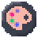
Temperament (feeding)Feeding does two things: it restores hunger and temporarily installs a temperament module that changes only how your pet moves and idles for a few hours.
⚡ Active
Wanders around more.
⚙️ Balanced
The default pacing.
🌙 Lazy
Stays put more, moves less.
The module lasts about 4 hours and then expires on its own back to Balanced. It affects only movement — it never punishes hunger or energy, and it doesn't change your Core's fixed personality, evolution, gem or family.
Bonding
Your bond is the relationship you build with your pet over time. It only ever goes up.
- It rises through affection, baths, play and other positive interactions.
- It never decays from being away — step away for as long as you like.
- It feeds achievements and affectionate moments. Reaching 90 bond points unlocks Best Company.
Open the Core panel (💎) to see your bond in points alongside your Core's fixed personality traits.
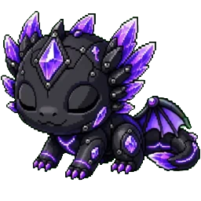
EvolutionA Core grows through five stages — from a raw core to a permanent adult. Growth is driven by real time, not by feeding.
| Stage | Name | Duration | Notes |
|---|---|---|---|
| EV0 | Core | ~30 seconds | Fabrication. Hatches and asks you to name it. |
| EV1 | Baby | 24 hours | First living form. |
| EV2 | Child | 24 hours | Unlocks Growing Up. |
| EV3 | Teen | 24 hours | Last stage before adulthood. |
| EV4 | Adult | Permanent | Final form. Unlocks Adult Form. |
Each stage change plays a short upgrade ("solder") animation during which your pet briefly sleeps, then wakes in its new form. Stages advance automatically once enough time has passed.
First journey vs. later Cores
- Your very first Core makes the full EV0 → EV4 journey once.
- After that first journey is complete, every Core you recycle is born as a baby (EV1) again — but you don't have to wait: the stage selector below lets you jump straight to any stage.
The stage selector (🧬)
- The moment any buddy on your account reaches EV4 for the first time, the 🧬 button unlocks account-wide, forever.
- Use it to move freely back and forth between EV1–EV4 — pick the form you love and keep it.
- While a stage is hand-picked, natural evolution pauses at that stage; choose another stage any time. Seed, rarity, name and personality never change.
Rarity & pity
Every Core is generated from a unique seed that produces a rarity score from 0–100. That score maps to one of five tiers, each with its own gem and colour.
| Tier | Gem | Base chance | Score range |
|---|---|---|---|
| Common | Citrine | 55% | 0–19 |
| Uncommon | Emerald | 25% | 20–39 |
| Rare | Lapis Lazuli | 12% | 40–59 |
| Epic | Amethyst | 6% | 60–79 |
| Mythic | Ruby | 2% | 80–100 |
The Mythic pity system (account-wide)
You're never unlucky forever. Pity belongs to your whole account: every time you recycle or create a new buddy in any slot without landing a Mythic, the shared counter goes up (up to a maximum of 225). As pity climbs:
- Common and Uncommon fade out — their chances shrink toward zero as you pass roughly two-thirds of the bar.
- Rare, Epic and Mythic converge toward roughly equal chances (about a third each) at the top.
- Landing a Mythic on any buddy resets the account's pity to zero.
Because the top three even out, a Mythic is never guaranteed — pity just stops the game from being cruel. Each slot's recycle has a 24-hour cooldown, so with all 5 buddies you can earn up to ~5 pity points a day (about 45 days to the cap at full pace).
The Mythic Void
A perfect 100/100 roll doesn't mint an ordinary Ruby: it reveals the Mythic Void — the only buddy in the game with gradient sprites, and its own achievement. The rarest sight there is.
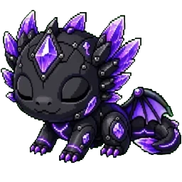
Birth card & signatureThe same seed that sets rarity also mints a fixed birth card — a collectible profile that never changes with care. Open it any time from the Core panel (💎).
What's on the card
- Cosmic origin — a real astronomical place, from the Solar System, Moon and planets up to distant stars and nebulae. Rarer tiers unlock more exclusive origins.
- Chassis material — from everyday alloys and polymers up to exotic materials like sapphire crystal, iridium alloy or graphene aerogel.
- Height & size class — roughly 21–35 cm, classed as Small, Medium or Large.
- Mass — derived from height and material density, so a dense material or a big silhouette makes a heavier Core.
Personality (fixed traits)
Each Core is born with fixed personality values that never change with care:
Affection
0–100
Curiosity
0–100
Sensitivity
0–100
Calm ↔ Mischief
−100 to +100 axis
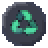
Recycling & the shelfRecycling is how you start fresh and grow your collection — and you never lose anything by doing it.
How recycling works
- The Recycle (♻️) button asks for confirmation and has a 24-hour cooldown (so Mythic re-rolls can't be spammed).
- Recycling archives your current Core to the shelf and mints an immutable card of it, stamped with its era and version.
- You can reactivate any archived Core later whenever you want.
- The new Core is born as a baby (EV1) with a freshly rolled rarity — and with the stage selector unlocked you can jump it straight to any stage.
- During the cooldown the Recycle button is disabled and shows the remaining time on hover.
The holographic card viewer
Click a card's thumbnail on the shelf to open an interactive viewer: the card tilts in 3D following your mouse, with a specular highlight, a rainbow layer and animated sparkles. The effect gets more intense with higher rarity and finish. The collection panel also tracks which rarities you've discovered.
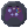
Mini-gamesThree mini-games live under the Play (🎮) menu. Every match rewards care and counts toward achievements — and none of them punish you for losing.
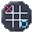
Tic-Tac-Toe ⭕You play X, your pet plays O — now on a neon cosmos board with glowing marks, a turn indicator and Undo / New Game buttons. Each of the pet's moves is decided 50% by a perfect minimax AI (never loses) and 50% by an easy heuristic (win → block → center → corner → random), so it's genuinely unpredictable even if you know the code.
- Win → a double care reward (happiness & bond ×2).
- Draw → a single reward.
- Loss → no penalty to your bond.
- A rewarded match costs a small ~2 points of energy, once per game.
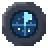
Scanner Mode 📡Also called Hide-the-Core. Your pet camouflages and leaves a hidden ping somewhere safe on screen. Rounds are quick: you get a random 7–13 second window, and the signal relocates more often — track it down on the radar before it closes.
- Listen for the sonar bips: a countdown, a camouflage confirmation, a periodic sonar sweep, and an alert when the signal changes.
- Click the hidden ping in time to win — this unlocks Signal Found.
Pixel Beats 💧
A 4-lane rhythm game played with D F J K (or tap). It has three genuinely different arrangements, drawn from a shuffle bag so you see all three before any repeats:
- Adventure Melody — pitched notes with an audible accompaniment.
- Accessible Drums — a clear, steady pulse.
- Crystal Synth — shimmering arpeggios.
Each mode has its own chart, rhythm and backing track. Every note is a real hold bar: press when it reaches the line and keep holding — the lane lights up and sparks fly — then release at the end. Releasing early counts as a miss. What matters is not missing; hitting late still counts. You get a grade at the end:
| Grade | Requirement | Reward |
|---|---|---|
| S | Hit ~99%+ of notes, 90%+ of them perfectly on-beat | Double |
| A | Hit ~95%+ of notes | Double |
| B | Hit ~75%+ | Single |
| C | Hit ~50%+ | Single |
| D | Below 50% | Single |
Any win unlocks Beat Master. The game is fully polyphonic and has a mute button.
Pomodoro timer
PixieBuddy doubles as a focus companion: a built-in Pomodoro timer (⏲️ in the menu) runs focus/rest cycles in a floating Cosmos Glass clock beside your pet.
- Set your own focus and rest minutes (default 25/5); cycles repeat until you stop, with a cycle counter.
- The clock shows a phase-colored countdown ring and the remaining time. Click it to stop the session or adjust its opacity (25–100%) — preferences are saved.
- During focus your buddy sits quietly in place so it never distracts you; each phase change brings an emoji, a speech bubble and a jingle.
- Keep the Pomodoro running for 60 accumulated minutes to unlock the Sixty Minutes achievement.
Achievements
There are 18 trophies on a Steam/Xbox-style shelf (unlocked vs. locked, each with its own Cosmos Glass icon). Achievements belong to your account: every buddy shares and contributes to the same shelf. They are pure memory — they never lock any pet rule, they just record your journey.
| Trophy | How to unlock |
|---|---|
| 🏷️ First Name | Give your Core a name. |
| 🔋 First Food | Feed your pet once. |
| 🛁 Maintenance Bath | Give it a bath once. |
| 💕 Affection Received | Pet it once. |
| 🎮 Play Time | Play any mini-game once. |
| 🤝 Best Company | Reach 90 bond points. |
| 🌱 Growing Up | Reach EV2. |
| 🌟 Adult Form | Reach the permanent EV4. |
| 📅 One Week Together | Reach 7 days of age. |
| ⏲️ Sixty Minutes | Keep the Pomodoro running for 60 accumulated minutes. |
| ⭕ Sharp Mind | Win a game of Tic-Tac-Toe. |
| 💧 Beat Master | Win Pixel Beats. |
| 📡 Signal Found | Recover the ping in Scanner Mode. |
| 👑 Mythic Touch | Obtain a Mythic Core. |
| 🌌 Mythic Void | Obtain the perfect 100/100 Mythic Void Core. |
| 🎖️ Seasoned Player | Play 25 games. |
| 🌙 One Month Together | Reach 30 days of age. |
| 🗂️ Collector | Archive 5 Cores in your collection. |
Multi-buddy
You can keep up to 5 buddies living on your desktop at once — each one a full, independent pet.
- Open a new buddy with the ➕ button in settings. Each has its own identity, seed, rarity, stats and save file.
- Shared by the account: achievements, the card shelf and Mythic luck (pity) — every buddy contributes to the same collection.
- On Windows, all buddy windows group into one taskbar button with individual previews and close controls.
- A single tray icon manages everyone: activate any buddy, dim/inactive list, Reopen all, and one-click hide/show for the whole group.
- Quit and relaunch: one buddy returns automatically; the rest wait as inactive entries in the tray, ready to be reopened.
Languages & audio
The whole interface — including achievements and the music modes — is translated into 7 languages: English, Portuguese, Spanish, French, German, Italian and Russian.
- You pick your language on first run and can switch any time from the menu.
- Audio is royalty-free 8-bit chiptune generated offline, with a shared melodic identity: short memorable motifs for interactions, a brief farewell at sleep, and progressively fuller jingles for startup, evolution, achievements, Epic and Mythic.
- Everything plays locally, Pixel Beats is polyphonic, and there's a mute button.
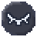
Privacy & offlinePixieBuddy is 100% offline. It uses no AI at runtime, never talks to the internet, and sends data nowhere.
- No network, no login, no telemetry.
- All state lives in a local
save.json(with an automaticsave.bak.jsonbackup and atomic, corruption-safe writes). - No cloud, no model, no third-party sound or sprite at runtime — the pixel-art and chiptune are original to PixieBuddy.
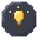
Tips & quick answersCan my pet die?
No. There's no death, aging or grave. Neglect can make it sick, but care always heals it.
Do I need to play every day?
No. Bars only drain while the app runs, your bond never decays from absence, and health freezes during sleep. Come and go freely.
How do I get a Mythic?
Keep recycling (24h cooldown per slot) or creating new buddies — every non-Mythic roll builds the account's pity and steadily improves your odds, though a Mythic is never guaranteed. And if you ever roll a perfect 100/100, say hello to the Mythic Void.
Can I keep my buddy as a baby?
Yes! Once any buddy has reached EV4, the 🧬 stage selector unlocks account-wide — pick any stage from EV1 to EV4 and your buddy stays there until you choose another.
Will I lose my current Core if I recycle?
Never. It's archived as a permanent, immutable card you can reactivate any time.
Best quick care routine?
Feed → bath → one mini-game → a bit of affection. That tops every bar and lets health recover on its own.